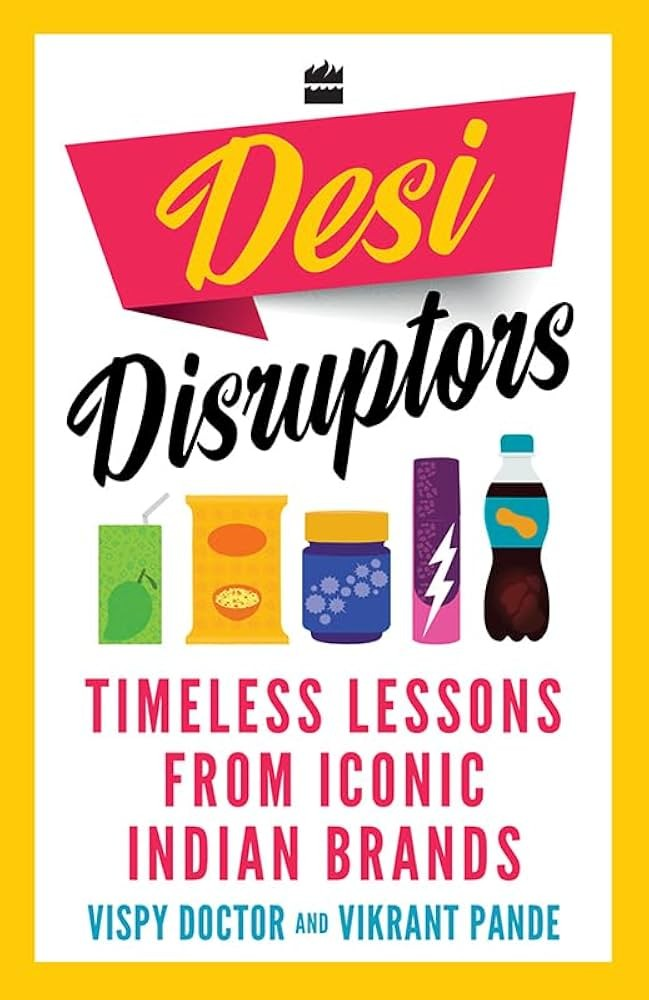

Library › Business & Startups
Desi Disruptors: Timeless Lessons from Iconic Indian Brands — Summary & Key Lessons

A 40-year market-research veteran walks through 26 Indian brand stories, from Vicks to Fogg, and shows the insight underneath each one.
📖 OPEN THE FULL INTERACTIVE BREAKDOWN →🌐 Read it in Hindi, Hinglish, Gujarati, Tamil & 22 more languages — free, with audio.
💡 The Big Idea
Vispy Doctor (Ormax Consultants) and Vikrant Pande distill four decades of focus-group work into one doctrine: an insight is a consumer truth that has not yet been worked on. The book profiles 26 brands in four acts: blue oceans (Vicks, Maggi, Whisper, Frooti, Goodknight), created needs (Itch Guard, Livon, Ceasefire, Krack), commodities turned brands (Aashirvaad, Ambuja, Tanishq, iD Fresh, Kanan Devan, Lenskart, Puro), and giants dethroned (Moov over Amrutanjan, Fogg over AXE, Thums Up reborn). The recurring mechanism: real research (living rooms, slums, chemist counters), the courage to act on the unsaid, and relentless execution, with honest postscripts (Coldarin no longer leads; Ceasefire lost focus and faded).
🧠 The 8 Key Lessons
Lesson 1: An Insight Is a Consumer Truth Nobody Has Worked On Yet
Preface
The authors' working definition drives every chapter: insights are not opinions or data points, they are truths consumers feel but never articulate until the right question meets the right listener. Santosh Desai calls it the unexpected vision of the obvious. The practical skill is reading what people mean instead of what they say (Paco Underhill would rather watch shoppers than ask them), because focus groups produce stated preferences while behavior produces real ones.
📖 Example: Vispy's team found that customers in focus groups said one thing and did the opposite repeatedly; the winning brands (Livon, Stopache, Moov) were built on the gap between the two, uncovered in hundreds of Ormax sessions with Darshan Patel. Read the full example →
⚡ Do this: Write down what your customers SAY about your category, then observe what they actually DO for a week. The gap between the two lists is your product roadmap.
Lesson 2: Create the Ocean Instead of Fighting for Share
Part One: How to Create a Blue Ocean
The brands in Part One refused the market-share frame entirely. Vicks did not fight cough syrups, it defined relief for the whole family. Goodknight did not fight coils, it created the repellent-machine category. The structural move: when alternatives are homemade or makeshift (home remedies, coils, plain water), the revolutionary brand converts the makeshift into a product and dominates what it invented.
📖 Example: Goodknight became so generic that customers asked shopkeepers for a Goodknight while pointing at competitors' machines; one focused entrepreneur built an entire market that did not exist before, and it still expands because mosquitoes are not going away. Read the full example →
⚡ Do this: Name the makeshift solution (home remedy, DIY, plain avoidance) your category replaces. Market against THAT, not against your branded competitors.
Lesson 3: Technology Plus Insight Becomes a Category
Frooti: A Drink You Can Carry Anywhere
Frooti's 1985 launch worked because Tetra Pak packaging solved an insight (customers wanted fruit drink they could carry and consume anywhere, impossible with returnable glass bottles) and the technology created a first-mover that lasted decades. Bharat Dabholkar's point: technology alone is a gimmick, but technology answering a felt consumer gap creates and keeps a category.
📖 Example: Every fruit drink before Frooti came in glass bottles: drink it at the shop or return the bottle later. The tetra pack turned mango juice into a pocket product, and Parle Agro held the top spot for over thirty-five years. Read the full example →
⚡ Do this: List your category's packaging or delivery assumptions. If a technology exists that removes your customer's biggest practical annoyance, first-mover status is still available.
Lesson 4: Sell the Occasion, Not the Product
Maggi, Glucon-D and Nycil
Maggi became generic for noodles by owning an occasion (hungry kids home from school, two minutes, one mother) rather than a food type. Glucon-D reactivated a dormant need (instant energy in brutal summers) instead of re-inventing a powder. Nycil owned one specific enemy (prickly heat: karo ghamoriyon ki chhutti). The lesson: positioning is choosing the moment your product is THE answer and repeating it relentlessly.
📖 Example: Arvind Sharma (four decades in advertising) recounts Glucon-D's repositioning after a Kolkata researcher was served a glass in 40-degree heat: instant relief was the product, summer was the occasion, and the brand dominated for decades after. Read the full example →
⚡ Do this: Write the sentence: 'When [specific occasion], [brand] is the only answer.' If you cannot fill the blanks specifically, your positioning is a slogan, not an occasion.
Lesson 5: Break the Silence Politely, Then Own the Problem
Whisper, Itch Guard, Krack and Jockey
The most profitable Indian categories were unspoken: periods (less than 20 percent of rural women used sanitary napkins when Whisper's story begins), ringworm in places people will not mention, cracked heels, underwear nobody displayed in shops. Each brand grew the entire market by saying the unsaid with dignity: education first, product second, and the category defaulted to the brand that named it.
📖 Example: Whisper's rise required changing an entire cultural mindset before competing on features; Itch Guard made a shy affliction sayable in one clean word, and the Paras Pharma playbook (Livon, Krack) repeated it: find the problem people will not mention, and speak it clearly. Read the full example →
⚡ Do this: Identify a problem your customers are embarrassed to name. Build your marketing language to say it respectfully and publicly; the first brand to say it comfortably usually owns it.
Lesson 6: Brand a Commodity by Removing Distrust
Part Three: Aashirvaad, Ambuja, Tanishq, Kanan Devan, Puro
Atta, cement, salt and tea are bought on trust, not features. ITC's Aashirvaad won with honest pricing (sell at 105 with no freebie games, 95 to the trader) and visible quality; Ambuja built trust with masons and builders, not end consumers; Kanan Devan branded the source itself (the Munnar estate); Puro attacked salt, a category synonymous with Tata, on one health attribute. Commodity branding is trust manufacturing at scale.
📖 Example: Hemant Malik explains the clean-pricing call: branded atta was sold at 135 with 30 of freebies thrown in; Aashirvaad asked traders to sell at 105 straight, and the honesty itself became the brand's differentiator, later extended into besan. Read the full example →
⚡ Do this: Remove one pricing or quality gimmick from your product this month and replace it with a straight, visible promise. In commodity markets, honesty is a feature people pay for.
Lesson 7: Beat the Giant by Naming Its Weakness
Part Four: Fogg, Moov, Thums Up
Fogg did not outspend AXE (HUL); it exposed a hidden weakness: gas. 'No gas, no wastage, 800 sprays guaranteed' turned deodorant buying from fragrance romance into value arithmetic, and Vini Cosmetics took the market. Moov dislodged a century-old Amrutanjan by owning the specific occasion (back and muscular pain) the balm giant treated generically. Thums Up, left to die after Coca-Cola bought Parle, rose again on Taste the Thunder because its raw, strong identity was the one thing the global brands could not copy.
📖 Example: Vispy's research found consumers associated gas in deodorants with wastage; Fogg's 800-sprays promise attacked that exact association, targeting not just AXE but the entire deodorant market's pricing logic. Read the full example →
⚡ Do this: Find the one attribute your giant competitor quietly wastes (gas, generality, heritage drift). Name it publicly and price your product around that single number.
Lesson 8: Focus Is a Practice, Not a Poster
Ceasefire and the Conclusion
Ceasefire created and owned home fire safety in India's mind, then diversified into unrelated products and let the dominance fade: the book's most instructive failure. Darshan Patel's counter-example is obsessive repetition (his brands hammer one idea on television for years). The conclusion is candid: most profiled brands won by refusing to wander; the one that wandered lost its word in the consumer's mind.
📖 Example: The authors note plainly that Ceasefire captured the market's imagination from day one, became the default name for home fire safety, then lost focus, diverted efforts to unrelated brands, and watched its dominance fade. Read the full example →
⚡ Do this: Write the ONE word you want to own in your customer's mind. Audit every project and product line: anything that dilutes that word is rented focus, kill it or spin it out.
✅ 5-Step Action Plan
- Observe customers for a week and write the gap between what they say and what they do.
- Market against the makeshift solution, not the branded competitor.
- Attach your product to one specific occasion and repeat it relentlessly.
- Say one unsaid problem publicly and respectfully; own it.
- Audit every product line against the one word you want to own; cut what dilutes it.
⚠️ When This Doesn't Work
The authors state their own limits up front: the list is not exhaustive, some profiled brands (Coldarin) no longer lead their categories, internationally-born names (Vicks, Maggi, Jockey, Volvo) are included for their India-specific playbooks, and several stories rest on founders' decades-old memories that may blur sequence. Darshan Patel's heavy television spending philosophy is noted but not dissected. Read it as a practitioner's pattern library of Indian consumer insight, not as audited brand history.
💀 The Graveyard Proves It
🧯 Ceasefire — Taught India to Keep a Fire Extinguisher at Home, Then Lost the Fire. Burn: The default household name for fire safety faded into a niche; the category it created from scratch still sits empty. Read the full case study →
💬 Best Quotes from Desi Disruptors: Timeless Lessons from Iconic Indian Brands
- “Insight is a consumer truth which has not been worked on.”
- “It is the unexpected vision of the obvious.”
- “It is better to die differentiating.”
Interactive version: mark lessons as read, listen in your language, share quote cards.